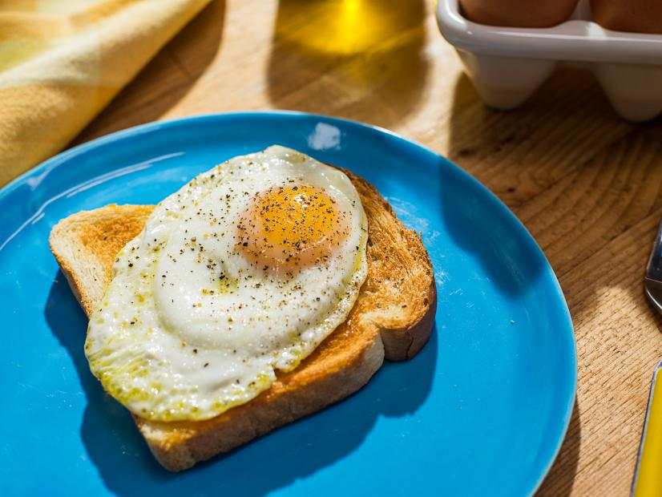

Sunny Side Up Egg

Description
This is everyone's side dish. A rich, creamy egg that goes with everything.
For this recipe, you will need:
Ingredients:
- Egg(As much as you need)
- Oil
- Salt
- Pepper(optional)
Steps:
- Heat up your pan.
- Add oil.
- When the oil starts to smoke, add the egg.
- Baste the egg.
- Add a pinch of salt.
- When the edges starts to brown, turn the heat off.
- Garnish it with salt and pepper./